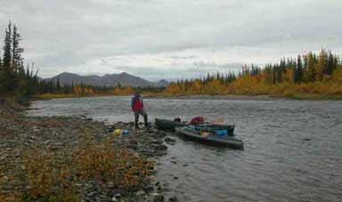
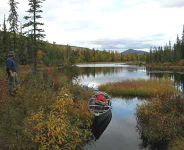
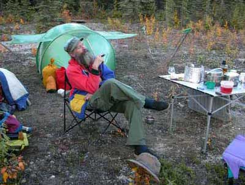
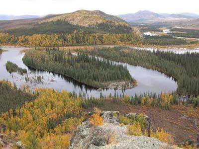
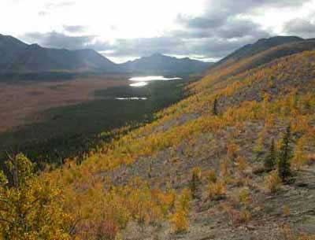
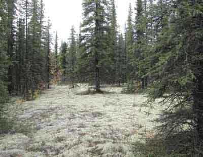
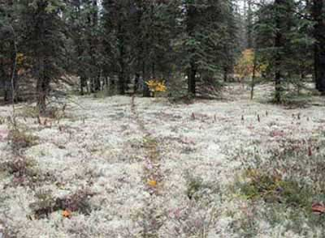
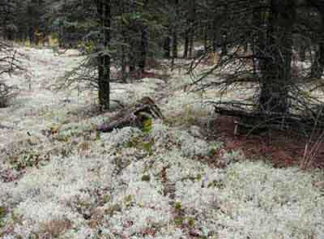
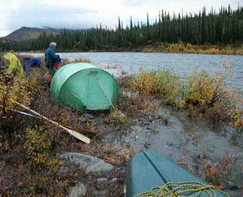
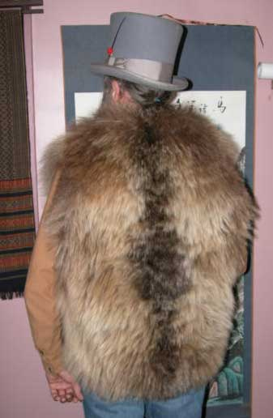

AlaskaStories.com
Stories 6...
Page contents:
An evening in Fairbanks: society
Christmas 2002: annual form letter
Solstice Report: society
Another Escape: kayaking
FHSS: society
AN-2: flying
Another wild moose chase: hunting
Grizzly Bear Vest: society
And this aint no bullshit...
An evening in Fairbanks
It was a respite from the usual desperation facing the blank screen insatiably demanding more words. An evening in Fairbanks, among the aristocracy.
First off of course, on account of the aristocracy meticulously paying attention to their attire, and not to be outdone by the fine chaps, I carefully selected a shirt made of my family tartan. Virgin Scottish wool of course. By chance it was a shirt I have worn to the summits of several Alaska Range mountains, some of them first ascents in winters of course, desperate that it was. And that is as close as this story will get to any real adventure. I had since switched to synthetics before I could wear out my wool climbing shirt, and by damned I am going to get my money's worth out of that shirt, pricey thing that it was. I accented it with a tie of an identical plaid, leaving only the observant to notice that I was wearing a tie, sose I could play both sides of the image game. As it is with we old military sorts, I chose my 7/17 Cavalry crossed sables brass tie tack. The damn thing fell apart once so I had to solder it back together, and I am going to get my money's worth out of that thing too, even though it was free.
My black leather vest moderated the otherwise noticeable colors of the Buchanan tartan. My only new pair of jeans complemented the image of my cowboy boots that I have had resoled several times now. The grizzly bear vest seemed to be a suitable outer garment for the snowy evening that had a certain chill about it, but instead I donned my old Army flight jacket with the white wolf ruff that everyone in my Army unit wanted when I left, so it was lost in the line of duty, and found in my new closet the day after I departed. I mused upon my selection of hats, and selected my black top hat with a red rose bud in the band. Never trust a man who changes hats. Come to think of it, never trust anyone anyway. Instead, ask them questions to learn what they know and how their mind thinks. That is more reliable than trust.
Thus suitably done-up for the evening, I set out for a stage production of Macbeth, along with others among the Fairbanks elite. A superlative performance with noticeable feeling infused in the characters. Fairbanks gets some of the better theatrical presentations, on account as the high school drama teachers this far north produce a bit more adrenalin under fewer governmental restrains and then heap the pressure on their over-worked students. And that is the way it should be. Not nearly enough. I tell you the kids have it too easy these days, and the proof is that they will say the same words in 30 years. Macbeth played in a modern corporate context is as Macbeth should be in our times. A hostile corporate take-over is all the old kings did anyway. Well done. Well done.
Well, I kinda got talked into that rather cultured adventure, not my usual fare, by Zena the high school drama teacher, during a previous discussion of language influences on the mind's perceptions, by gender, over a culinary art production orchestrated by some of the downtown gourmet eating establishments, or something like that. I am now undeniably a bit more cultured and knowledgeable of the theater, on account as I was not much so before that.
Not to have dressed up that much for a relatively early final curtain at the high school, I next set off to the Pumphouse. The Pumphouse is an establishment of substantive elegance harking back to the best of the gold rush days. It was the large old tin building housing the pumps supplying water from the Chena River, for a successful gold dredge around the corner of a nearby hill. The gold dredges were all rather successful, for awhile. If the old machinists, grimy with grease and blood-stained from scraping their knuckles trying to keep those damn heavy iron pumps working, spitting tobacco and swearing just a bit for color now and again, knew what that coarse tin building would eventually become, with the most impressively appointed bar in town, they would know why the tea toddling and gin nipping Fairbanks City government drones were idiots for having bulldozed the classic old bars in Fairbanks to replace them with sterile government buildings and a parking garage. The Pumphouse was out of their reach, and is the place to go.
Ensconced in a plush chair in the corner, I lit up a fine cigar, an Aristoff maduro double corona, a new cigar I had been looking forward to trying. A bit flinty on the first draw, but shortly proving its worth, which was not too difficult on account of its moderate cost. Moderation in all things that cost money. Excess in everything else. The image of aristocracy need not be costly. And somewhat later as I sit here typing these fleeting illusions of words into your computer screen, subject to the whims of your mouse, well after I smoked that stinky cigar, my mouth still tastes like the whole Russian Army camped overnight in it, and took off their boots. I might try some Desenex.
The rich peaty flavor of a glass of Lagavulin 16, an Islay Scotch of course, complemented the robust smoke of the cigar, as best it could. I enjoyed a typical culinary masterpiece one may expect at the Pumphouse, in this case the dead flesh of an old squid, with a fancy name and an arrangement of spices that made even a slimy sea creature taste good.
Bill the owner came over for a brief chat. We traded cowboy stories out on the range. Nice thing about Alaska, you are so far away from real cowboy stuff that you can pretty much tell whatever cowboy story you want, and there probably will not be a real cowboy around to burst out laughing. Bill told his story about riding with Reagan and the other high rolling muckitty mucks on Ron's California ranch. Good story. Would have been hard to beat if I had not ridden with Eme. I just mentioned that the details were on AlaskaStories.com. A cowboy hat don't prove nothing no more. You gotta have the website.
Inspired by the theatrical production of Macbeth, I sat there scribbling away on a piece of paper, great and weighty matters of serious consequence that will strike anguish in the minds of government sorts elsewhere. I then penned these words for which you have been so foolish as to waste your valuable time, on account as I was going to sit there and get my full money's worth out of that two dollar and fifty four cent nicotine log. Never again read the boring old rhetorical dribble of the other guy. Shake the dust off that keyboard, click on a new screen, and write your own words. You will learn more from them. And maybe get a cowboy hat.
Merry Christmas Merry Christmas Merry Christmas for good grief sakes ........(December 2002)
What the hell lies am I going to tell for an annual Christmas form letter after having not done a thing worth admitting to for an entire year?
I will just copy this email I sent just last night, after a fashion. I write on this occasion to inform you of receiving your package by way of the postal system, of all things. It arrived in good order, having been bent over and mangled in only one area. I am keenly aware of the abilities and nature of persons who handle packages, as having myself, among other professions, loaded trucks of dynamite, here in Fairbanks, back when explosives were used for things other than perceived terrorist activities in pursuit of the ancient and honorable tradition of thumbing one's nose at whichever dirtbags are leading the next more powerful government or social system, local or big time.
The explosives-throwing game is played by two chaps in the explosives shed rolling boxes of dynamite down the roller ramp into the truck, to the two truck guys. The two shed guys swing those boxes as hard and fast as they can, to attempt to go faster than the two truck guys who rapidly swing the boxes off the rollers and into each position in the stacks, with an abrupt stop for each box against the others. The two sides switch positions every several minutes, when the truck guys miss a box, suddenly resulting in a half dozen boxes of dynamite slamming into a pile of themselves before the throwers can stop. I think the same thing happens among the younger male postal handlers whose cranial saturation of testosterone and innate Neanderthal craving to smash things is that which attracts them to the opportunity. Back when it was legal to mail explosives and ammunition through the regular mail, they did the same thing. Law should prohibit the male sex from Post Office jobs, and just about everything else too.
The package in the mail was at first suspicious, on account of it being so close to Christmas. I concluded that it may be a Christmas present, so I set it aside to put it under the Christmas tree as soon as I decorate one. Maybe I will decorate the mpingo tree, growing from seeds sent from Tanzania, on account as it is already in the house. There are only a few billion spruce Christmas trees outside, free for the taking, in desperate need of thinning, but they are outside.
Upon reflection, after a few days, I concluded that the package was not wrapped as a gift, in that colorful foofoo Christmas wrapping paper stuff, so I could not know that it was a Christmas gift, so I opened it.
Wow, fresh Texas pecans. A little unusual that pecans would be mailed in a mailing tube, but it worked. Well, I ate a few. Real pecans have so much more flavor. I figured I would save the rest for Christmas. But a couple days later I had some more. When I dumped them out, this other stuff fell out of the tube, first a short section of clay tubing on one side of the crushed shipping tube, and then the rest of the clay smoking pipe, and then there was the pouch of the most socially damaging hazardous addicting drug in the whole world, so far. Tobacco. Worse, there was no government warning label on it. Therefore, I did not know what to do. I handled it carefully.
Well, imagine the fortuitous nature of a pipe like that, obviously intended to be broken, by the knowing decision to send it by way of the aforementioned gentlemen who did not get it out of the system in the military, arriving at a clay pipe repair expert. And besides, to get my first hit of the tobacco, sose I could get addicted, I had to fix the pipe. The first clay pipe I repaired was back in 69, a superlative year. That is back when clay pipes were real clay pipes. That one had an identical break, because they all break anywhere there along the long skinny clay stem, shortly after they are acquired. I fixed that first one for a colleague. I suspected something suspicious, on account as his colleagues did not strike me as the old colonial types who would smoke tobacco and comment on worldly matters. They were kind of the 60s sorts who commented on the same things. But there is simply no accounting for the tastes of people who would purposefully breathe smoke. Intelligent people tend to move away from smoke.
Therefore, this fortunate new clay instrument of smokin da leaf acquired a glimmering 30 mm long brass sleeve smoothly flowing over the hidden break, near the mouth end, lending an aire of aristocratic air about it, or something like that.
Thereupon I arranged its position on the shelf above the desk, the long slender white clay is in striking contrast to the dark wood of my other pipes and their display stands.
It was later in the evening, that I was afforded the time to sit back and pen this note, while enjoying the inaugural smoke from this fine old colonial clay, after cleaning it with VSOP Cognac of course, a ritual for a new pipe. The pipe smokes well. I decided to smoke a local blend, finest leaf in the Shire, preferred by Bilbo, and Gandalf himself when he visits. The pecans go well with the smoke. And one of these days, I may open that pouch of the Best Virginia Williamsburg blended Tobacco that came with the pipe, but why, I do not know.
Okay so if smoking a clay pipe is not enough adventure for the whole year, a couple of us went down to the Castner glacier a couple weeks ago or so, to survey the damage from the 7.9 earthquake epicentered on the Denali fault just south of here. If you want more of the story on that little shake that knocked one of the pipes off the shelf, go to AlaskanAlpineClub.org, and then the Photo Page.
When I suggest that global warming, or now apparently only the Pineapple Express from Hawaii, a recurrent weather pattern, is bestowing all the benefits on Alaska, I can verify my claim by two of us walking in street shoes, to the snout of the Castner Glacier, from the road, in December, wearing light jackets. There were times on that stretch back in the cold days when I was in full down parka and pants bent over against the wind and not all that certain I had even survived to perceive my being there. The main glacier cave entrance was caved in, from the earthquake, which was okay since we did not even have a headlamp. Sometimes the adventure is just getting there in the most leisurely style. Hard partying at Carol and Dick and Karen and John's cabin in the Range that night.
Oh, a beautiful woman gave me one of those pretty red Pointsetter, or whatever flowers for Christmas, with the pot wrapped in red tinfoil. Viola. I cut the tinfoil into little decorations and decorated the mpingo tree for the Christmas tree. It sits on the table, and almost reaches the ceiling. I might get an old electrical cord to stretch from the socket to the pot of dirt holding the mpingo tree, just so someone might think it has Christmas lights on it, so I do not look like I am so poor I cannot afford Christmas tree lights. After a car, Christmas tree lights seem to be the American standard of success.
Anything else will have to be put on the list of things for next year.
Merry Christmas and do the party thing pretty much every day next year.
Solstice Report
The annual Solstice Report from Fairbanks Alaska, geographic center of adrenalin-based human endeavors, is again the report of the Betty Boop Solstice Party.
Should you doubt the voracity of said endeavors, it is Fairbanks Alaska where are headquartered the international research teams who are scientifically and so far failing in the search for even one redeeming value in the Washington DC Police State infrastructure holding Alaska under the federal jackboot of imperialism and social repression of the downtrodden common people, and some of the uncommon people as well, or something like that. Respite from such stressful responsibilities is imperative.
The Betty Boop residence, high atop Ulerhaven, overlooks the spectacular panorama of the city of Fairbanks and the broad Tanana valley, dramatically bordered on the south by the glacier-clad Alaska Range. The sharp summits of Deborah, Hess and Hayes, among others, gleaming white ice with accents of vertical black rock, invite the minds of many dynamic Fairbanks residents, and frighten others. A smart person would have been in the mountains at the time, while others of us were longingly looking at them from the Boop Solstice Party.
Although Fairbanks is the last purportedly civilized stop for the entire northern latitudes, before the road may or may not continue north beyond what is rumored to be the edge of the world just before each gold miner's claims out there, the city itself blazes with light poured into the winter night sky from the opulent burning of Alaska North Slope refined, pumped through the hissing flames in rows of heavy turbines.
The night sky, not seen in the summer, arrives only in winter, sometimes after the first snow turns the forest and mountains glistening white as far as the eye can see. The sun's brief winter appearance above the Alaska Range to the south barely intrudes on the glare of the city lights reflected off every snow flake in the valley, producing an eerie image of the clearly visible night panorama, or something like that. And then the northern lights get to ripping and you might want your sun glasses.
The traditional solstice bonfire at Boop's sent showers of sparks into the crisp sub-zero air each time another log was pitched into its warming blaze. A lot of old scrap lumber finally got burnt up also. The crowd enjoyed the view of the bonfire from inside the house where the food and wine were at hand. The traditional barbecue was on the high deck at the east side of the house, looking down at Fairbanks, sharing space among the upper branches on the gnarled aspen tree growing through the deck. There, the grillmeister also stood alone in the cold, the crowd inside waiting for the plates of steaming grub he brought.
As the guests arrived, the entryway was stacked with attire from top hats to trapper hats, seal skin to beaver hide, grizzly bear vests to silk, gouchie shoes to bunny boots, and some things that started the dogs growling.
The traditionally eclectic group of Fairbanks noteworthies gathering at Boop's was again overheard analyzing the breadth of the world, including some portions of the universe seen only by the Hubble, in both geographical and conceptual arenas, as well as the evening's epicurinary artistry.
This year's theme was organic wines, with more than an ample selection, many achieving high acclaim, tending higher in proportion to the pile of corks.
The culinary creations were displayed in a superlative image of random accents spilling across the table and counters. They included the finest vegetarian delights from the remarkable far north gardens whose plants are bathed in summer sunlight 24 hours per day, never troubled by the night sky. And there was varied fresh seafood arriving straight from the icy fjords of Valdez and the Columbia Glacier just down the highway a ways, on the other side of the aforementioned summits, with maybe a few shrimp from the local supermarket. The heap was piled with food sometimes so fancy that the fixings were not ascertainable, which is just as well. There were tender moose steaks grilled to perfection, by summary decree of the coarse ruffian out on the deck, macho Alaskan hunter and grillmeister that he is, fumbling in the dark, burning one side of the steaks while the other side froze, poorly attired and barely literate, alder smoke in his eyes, telling the usual old moose hunting stories when we could not keep him out on the deck. There we were, mind you, and it was desperate indeed, albeit as usual. If the moose had not come back to that spot the next day, and my partner did not shoot it, while I was stumbling lost in the alders, we would be eating dog meat again.
The varied dogs, from yappie little foofoo ratdogs to burly huskies, mastiffs and mutts, among sleek sled dogs, crowded among the humans for prime kitchen space, a traditional Alaska thing. The conversation was interrupted by dog slaves incessantly commanding their dogs to stop begging, while the true friends of the dogs kept slipping them morsels, of course.
Traditional for the solstice at this latitude, a bottle of fine Skandia Vodka, green, emerged at the height of the event, and was sipped with comments on its remarkably harmonious flavor enjoyed only once a year on such occasion. Nectar of Northern Lights.
As is the accustomed custom, the later evening identified that portion of the academicians who seem to enjoy a more relaxed attitude as the evening progresses, retiring to the smoking room, to further discuss great and weighty matters of serious consequence upon which the fate of the world teeters, albeit as usual, while smoking some of the finer Virginia leaf from the old plantations, and from some of the new Alaska plantations as well. There was rumor of some Cuban leaf this year, or some such origin, among the array brought forward by these world travelers wisely selecting Fairbanks Alaska for their traditional solstice rondevoux. Damn computer spell checker does not have that traditional old word for an annual social gathering in the wilderness of the far frozen north, so I hope I came understandably close.
Artists that the lot of them are, the evening smoking adventure brought out the implements and accouterments variously created or otherwise acquired during the last year. While it was difficult to overshadow the Salmon Pipe, it had already become locally known in the latter half of the year, so the Clay Pipe derived the greater admiration. A traditional old colonial clay replica, it had arrived from Dallas Texas as a solstice gift, making it ideal for this rondivoux. Its bowl was pleasingly painted with sail boats on the evening tide, a glowing sunset and gulls overhead. Not unnoticed was the smooth brass sleeve repair covering the traditional hazard of the postal service. The long stems of colonial clay pipes were designed to be broken, repaired and then smoked. Upon careful examination, and after a few bowls of smoke, the pipe was found to be of such nature, rumored to have been discovered in an obscure garage sale in an old part of the city, that at the next arrival of the Antique Road Show in Fairbanks Alaska, perhaps scheduled in a hundred and fifty years, the pipe could be worth a small fortune, if the adjective is not discounted.
Among other brilliant conclusions suggested to mitigate the problems of the world on this particular solstice was the proposal that governments sponsor, if not demand that the general populace consume larger volumes of tobacco, alcohol and the other socially popular poisons, to reduce the total time each of these humans have available to cause the trouble these humans are so addicted to causing. Copious quantities of chocolate was thereupon served.
The proceedings adjourned late, and further advances in the human phenomenon were scheduled for discussion at the next Boop Solstice Party.
Another escape from responsibility
There I was, mind you, and it was desperate indeed, albeit at usual. I was separated from certain peril in the icy waters of the Alaskan southeast archipelago, by a scant few millimeters of kayak hull, and I was unfazzled. It was noon before I got away from the Auke Bay liquor store at the wharf, my kayak suitably laden for another scientific research expedition. These words are a scientific analysis, while the mere plebeians, adventurers and common riffraff might instead have gone on a vacation and written a story.
The normal difference between an adventure trip and a scientific research expedition is the gullibility of the taxpayers or others who are fooled out of their money to fund questionable activities fluffed-up with a lot of written hooey. Wisely not wishing to participate in that perfidious ruse of disgusting fraud, or just too ignorant of the process and having no political connections, I more efficiently, inexpensively and at no cost to the taxpayer, defined my adventure trip as a scientific expedition, with those words alone.
Well, were you ever curious about the credentials of the first person who defined the first scientist, or any other title that impresses people who are not curious about the origin of rhetorical ruses that have so easily fooled you for so many years? So that there may be no unanswered question in my regard, I verify that my scientific credentials are exactly as stated. And to establish that for record, if you are not curious or not a fellow scientist of my profound credentials, you are not authorized to read the rest of this research analysis. Non-scientists click here. Scientists click here.
Now that you are authorized to be reading this dribble, I was so intent on the proper conduct of my methodical research that I did not mind the motor boats zipping past my kayak when I left the harbor, off to their adventures they would reach so much faster, probably with more bottles of research enhancer.
By now I was adjusting to the more leisurely rhythm of paddling, bordering on boredom, far out from the harbor. One large motor vessel far off in the distance was noticeably annoying, for some reason I did not yet recognize. It seemed to be coming toward me, with a large bow wake, although it was too far away to logically derive such a conclusion. Just a temporary distraction.
Known to we scientists, when one paddles a kayak, one is pushing the surface of the planet away from the stern of the boat. One may perceive other relative motions, but the fact remains that one is successfully pushing that stuff progressively farther away, least the water would create a circular current and you would sit in one place. You can push a lot of stuff away with a kayak, but do not leave the wine.
I paddled through a choppy little rip current far from a point of land. Some porpoise rolled in unison nearby. The large motor vessel was still coming toward me. There was no longer doubt. Now what? It finally reached me, and came along side. Coast Guard. Government. Coasties. Armed thugs. Pirates with a government attitude. One of the Coasties walked forward on the bow, looked down at me, and in an officious tone of voice, asked, Where are you going?
These guys were obviously assigned to Alaska, from somewhere else, and thought they were in charge now. I was once that foolish, more accurately described as just plain that abjectly stupid, in another branch of the government's armed thugs, at another place. I should have not been so leisurely pushing that stuff away with my paddle.
Ah, hummm, where was I going? I would be out there for a couple months or more. This was just the first day, barely started. I knew where I left. I had a map of the whole coast. It did not matter where the bow of my kayak might take me. I would eventually go back to Fairbanks, but I dared not suggest that fact. These guys were in government uniforms that routinely blot out their sense of humor and more. So I just picked an innocent sounding place part way along a possible meandering route, to satisfy the chap and be on my way.
I said, Sitka.
There was a pause, and a stern stare. He responded, You're kidding.
No.
Are you alone?
This was the intellectual capacity of the United States Government talking to me, even before Clinton and Bush criminalized the possession of a human brain by any federal government personnel, and the DemocanRepublicrat political hacks adopted the law for all the State government personnel.
I looked around. Even the porpoise had fled. There were no boats anywhere near. I dared not look under my kayak spray skirt to indicate any rightful ridicule of these fine chaps. They had at least one 50 caliber machine gun on board, and I could not paddle faster than their boat or those half inch diameter projectiles of copper-clad steel.
Yes.
I picked up my paddle and paddled away. After awhile I looked back. The guy was still standing on the bow, staring at the water. They did not have anything else to do, and I was probably the highlight of their day. The Captain was probably still entering into the log book the detailed account of an interdiction and interrogation of a possible drug smuggler. Back then there were only drug smugglers, before the government invented terrorists for the new enemy. It will be most entertaining to see what those mental midgets in Washington DC invent for the next enemy. Several years ago the Vietnamese defeated the American enemy, then the Somolians defeated the American enemy, but enemies are never really defeated, and there is a long list of available enemies. Plenty for any dolts who need them, for lack of a life of their own, or the courage to paddle alone.
There is a place about the right distance out from Auke Bay, that has no name on the map, that looks suspiciously like a perfect camping place for the end of the first paddling day, and it is. You want to camp there before crossing Lynn Channel, if you are heading that direction, because it is an idyllic little cove, often full of fish, and you need to rest your mind a bit before risking your life crossing the treacherous currents of Lynn Channel, in a kayak. Where is the Coast Guard when you need them? My kayak would fit on the deck of their boat. But they stay back within turning radius of the nearest bar. Hummm, that makes sense to me. The tide was running against the wind, making the chop look as mean as it was. Take as long as you wish camping there. I did. It is a nice spot.
I got an alpine start at the crack of noon. The life of a seaman knows no respite. It was desperate as usual, heading out away from the comfort of shore, alone with the fish, crossing the treacherous currents of the inside passage. I survived the crossing, as have no few countless other kayakers. But some of the people who disappeared in Alaska, were in kayaks, going where other people thought they were kidding. Reaching the safety of the other shore, I glanced to one side to see a very large something just under the water diving under my kayak. Instant adrenalin. Its shape and color did not fit anything I have seen or heard about. I kept looking over my shoulder for the next few miles. There are some things down there that have not yet introduced themselves. We may need some scientific research funding for another trip to look for that thing.
I passed the duck in the duck story on Page 4. I got past a passageway that lured me to a short-cut, back in a calm bay leading to another bay on the other side of the peninsula at high tide only. I hastily pulled my kayak over the short stretch of wet rocks and seaweed to get to the ebbing tide on the other side. Any later and I would have had to unpack the kayak and carry all that wine, or maybe drink it while I waited for the tide to return. Getting caught run aground by a retreating low tide on a wide flat, in a kayak with enough wine to survive until the tide returns, is not perilous, as long as no one sees you and laughs themselves to tears.
I passed a pod of humpback whales methodically spouting on their journey. I paddled along the shore, meandering where it took me, camping at the good spots and at the less than good spots.
There are times when one's busy scientific research schedule is interrupted by a spot on the shore that is so inviting, one must stop and investigate. Lunch is an adequate excuse. At one such place I started boiling a pot of water, and successfully plied the shallow waters for a crab. I then arranged a comfortable seat, and grubbed the cork out of a fine bottle of wine. I sat back for a sumptuous lunch of fresh crab and fine wine, carefully observing everything in front of me for any scientific relevance.
There being none, I recorked the scant remainder of the wine in the bottle, and set out. As it was, the tide had shifted while I had lollygagged, and now a strong current was coming around a vertical rock wall, against my course. Being emboldened by being drunk, recklessly flailing a kayak paddle with no regard for any hazard I may therefore create, I challenged the current right at its strongest near the rock. I prevailed, but with such effort for so long that I was both sober and exhausted. I camped immediately.
On another day, there was a thick dark overcast and drizzle in the wind when I found a camp spot up a little tidal river where I intended to be. It was midnight. The chill wind and drizzle made things sufficiently miserable to mention, not withstanding my ebullient nature of course. Just when I found the only flat tent spot in the long wet grass, and I was about to shake out my tent, from betwixt my feet in the grass there was a muffled sound of, bu-u-u-u--r-r-r-r-t, and the blur of a small dickey bird disappearing. Now what? Was the thing only perching in the grass for the night, or was this its camp spot? I could not find a nest in the grass and darkness, but I marked the spot with a bent flower and moved to a bumpy tent spot several feet away, muttering.
The late morning was still beset with clouds streaming past low overhead, raining. I stumbled out of my tent, stiff from the bumpy sleeping spot, and shivering. I curiously walked over to the bent flower. Bu-u-u-u-r-r-r-r-t. Song sparrow. Melospiza melodia. And three cute little babies in a warm dry nest under a canopy of neatly arched grass, looking out at me. It was the best tent spot.
The small fishing towns in Southeast Alaska are the reason people move to cities and only visit small towns, quite fortunately for the people who live in small towns. And the fourth of July brings out the town folk for typical small town parties. I was at such a town at such a time, a town so small it had no stores, but a beautiful meadow with houses in the surrounding tree line. The party began. The local musicians played their fiddles and banjos, autoharps and dulcimers, and some weird things. There was dancing in the meadow grass. The food was plentiful.
The real foot race sent the excessively athletic ones off out of the way for a few miles. I was more interested in the bicycle race, on account of it being a slow bicycle race, and bicycles, like kayaks, have a seat. The winner of the slow bicycle race would be the last to cross the finish line without falling over or putting one's foot on the ground. And no turning around on the narrow road. I borrowed a bike. We streaked away from the starting line, as slow as we could ride and still be riding the bikes. I was doing well, near the lead, exactly opposite where I wanted to be. And then I got to the soft dirt on the road. I would have been humiliated if those around me were not equally incompetent at riding a bicycle. At the half way mark there were only two left in the race, and it was neck and neck, barely keeping their balance and barely moving. The crowd was going wild and wishing the finish line were closer while the riders strained to not reach it. The excitement pitched to a crescendo as the bikes approached the finish line and the little boy on the rattley old bike inched ahead of the adult on the shiny new ten-speed, to cross the line and lose. Sure good thing because the prize was a six pack of beer.
The slug races were well paced, and the winner was set free in the grass when he finally reached it. The race to set a pole, climb to the top of it, get water from the creek, boil it, boil an egg, and eat the egg, soon to be an Olympic event, illuminated the trick of not slowing the water-boiling with the egg that was already eaten by the serious athletes.
The bridge across the creek was near the center of the town, or its meadow. It was there that the long distance foot racers eventually returned, but it seemed that they took longer than they should have, and there were rumors of another party at the mid point of that race, out in the woods off the end of the road.
Did I mention that growing hemp is legal in Alaska? Many if not most of the coastal fishermen start the summer season by venturing into obscure little salt chucks that are too shallow for the Coast Guard vessels, and plant hemp to grow in the long sunny days of summer. Then return after mid summer they harvest the hemp, for rope of course. Serious fishermen do not trust nylon rope, and its smoke is poisonous. If you have a friend in a government job, afraid of the hemp plant and everything else the mental midget government drones do not understand, afraid to even ask questions to learn about such things, tell him or her to not end up like all the government people throughout human history, clueless their entire life as to why humans were invented, and how to have fun. All the current and previous government sorts of all the governments have failed to create anything more defining of government than armed police and military thugs stomping around, trying to stop humans from doing what humans harmlessly enjoy doing. The government drones persistently fail for obvious reasons, as the test of time proves. Why would anyone with an otherwise useful human mind choose to be employed by government? Come to think of it, none did.
Back at the mid-summer town party, the wood splitting contest took the cake. Sally had baked the cake and other such prizes, and arranged the log sections to be split. There was the mens division and the womens division and a few other divisions. The axes were swinging so fast that the mosquitoes were cleared from the area. The prizes were awarded, and Sally stacked her winter's supply of spit wood.
The fresh cooked crab was brought out and the music continued to play. The dancers danced late by the bonfire. Then I trudged back to my tent beside the sparrow camp. There was a red sun that night, a sailor's delight, and there was adventure to be had on the morrow at sea.
The line where the milky water of a glacier-fed bay meets the darker water of a strait, stretches far out from shore, and is a rich feeding area for birds, fish and whales. It is a worthy place to drift in your kayak. Add that to your science notes. Fill in a few names of birds. They will be darting around your kayak as though you were just something else floating among the other stuff. The Phaleropes, however they spell their name, are really cute.
Humpback whales are large. Kayaks are small. Whales feed below the flocks of floating Phaleroupes. When the whales decide to impress the kayaker, you will be impressed. They can suddenly lunge out of the water where you are not looking, and crash back down where you will then be looking, as close as they want. When the gentle ocean stillness is suddenly broken by a whale spouting right behind your kayak, your heart rate will test its limit. They can circle you, and will, unseen in choppy water, spouting where you are not looking each time, laughing.
I was slowly paddling along a vertical rock wall that continued straight down as far as the clear water would let me see. I casually came to a corner along the rock wall, at the same moment a humpback whale came to the same corner from the other direction. That was an impressive moment. I did not miss a stroke, albeit in the opposite direction, not casual, back-paddling as fast as I could as the whale came around the corner. Face-on with a humpback whale at the surface is entertaining. There was no time or space to turn around, and I was wondering if I could back-paddle all the way to the end of the cliff, a long ways, fast enough, when I noticed the cleft in the cliff, just behind me. I stuck my stern into what was a smaller cleft than I thought, to then notice that my 17 foot kayak still stuck out into where the whale was swimming. Too late. The whale kept coming, rolled a little to one side, brought its long pectoral fin up over the bow of my kayak, and kept on trucking, no doubt grinning. Look at a picture of a humpback whale where you can find one. It has an inordinately long and heavy pectoral fin that could have not noticed dunking some floating rubbish by a sea cliff. Some of the people who disappeared in Alaska, saw a humpback whale.
It was another place, in the rough waters of Cape Spencer, that I came around a rock to see the Orcas on the Orca Pipe on the Smoking Page, cruising close to the convoluted rocks, perhaps hoping to come around a corner and surprise something to eat. I sat and watched, not wishing to be that something if they were really hungry. Some of the people who disappeared in Alaska, saw Orcas. A sea otter seemed to be intentionally tempting them, swimming close, bobbing on the surface, watching them, apparently as confident as he was agile. The Orcas went on their way, out of sight around the rocks. I followed, on account as I was going where they were going. Shortly thereafter I came around another rock, and there just above the water, on a rock ledge barely adequate to hold him, was a seal, fresh blood smeared from a wound on his neck. He looked at me, close by, with abject fear in his eyes. He looked at the water, then me, then the water, then me, then he dove into the water. It is a hazardous sea out there. Some of the seals who disappeared, were in the southeast Alaska waters.
Two deer were playing on pebble beach, dancing around, rising on their hind legs and pummeling each other with their lightening-fast front feet, chasing each other in and out of the tree line. Good show. Nice beach. I pulled over. The deer stood there watching me. One walked closer to me. After awhile I left, and the deer went back to prancing around, chasing each other back and forth on the beach. Observation: Humans are sometimes of little interest.
The black bear was rooting around in the flotsam of the last high tide line, licking up the little crawly things that lived among the dead kelp and other loathsome stuff. I quietly paddled close, just a few feet out in the water. The sun was behind me, reflecting off the water. I watched, not making a sound. After awhile, having made the proper observations and becoming bored, I then said, Hey Bear.
You do not often see daylight under all four bear paws at the same time. But more amusing was when the bear regained contact with the planet. He was curious. He stood there, looking in front of me, and then right at me, and then behind me. He did not see me. The sun was glaring off the water around me. The bear was noticeably perplexed. I held my laughter, and in time, he continued licking the scrumptious scum line of the ocean on the pebble beach.
So again I said, Hey Bear.
So as not to bog this story down with repeatedly repetitious rhetoric, you are directed to go back and read the aforementioned results of the first, Hey Bear. I held my laughter, sitting in my kayak very close to the bear.
So then for the third time I said, Hey Bear.
Same reaction, only this time after looking everywhere around him, with a profoundly puzzled look on his face, he slowly walked up into the tree line, patiently looking over his shoulder every two steps, and disappeared. I burst out laughing.
Observation: Humans can be an irksome lot at times.
The Hobbit Hole. The real one. This is a secret. It is not on the map, and you will not find it. Do not attempt to look for it. It is rumored to be a fantasy. If someone tells you where it is, they are telling you where it is not, and they do not know in the first place or they would not mention it. You can paddle right past it and never know you passed it.
But if, after paddling in obviously dangerous water, you do paddle real close to the rocks, and follow the water around a couple corners into a narrow S-shaped channel, and you are not at one of the other cool places just like it, that I may tell of, you may find yourself in a hidden lagoon, befitting a pirate's fleet, with a green lawn at the near end of the lagoon, gracing two old homestead houses and newer log studio. The lawn presents an array of fruit trees, colorful flowers, berries and an immaculate vegetable garden. A long swing hanging from a large spruce tree branch at one abrupt edge of the lawn offers the thrill of swinging far out over the water at high tide. A babbling brook comes down off the hill, under the walkway to the main house, and across the lawn. There will be bottles of wine chilling in the brook. You might notice the path going up the steep hill behind the house, steps formed among the roots of the trees, a small bridge crossing over the tumbling creek. There may be someone up on the forested knoll looking down at you and the world, bare bottom naked taking a hot shower between two huge spruce trees, the knoll accented with rock sculptures nestled among soft moss, as well as a hot tub off to one side. And the mountain rises steeply behind that, where at the top far above, you can look 360 degrees down on the islands and straits. Anyone else would have to see the movie.
I had arrived from the story I had earlier paddled into, and saw it unfold as my kayak got closer. The others there were all Alaska adventurers of the highest quality, several of whom I knew from others I knew, residing at this hidden paradise lagoon while gainfully endeavoring to feed the masses with a few fish, high dollar reds as fast as they could be slaughtered, to pay for the fishing boat expenses and hopefully enough remainder to fill the winter larder.
I arrived mid afternoon, when the fishing folks were returning. Party time. A fisherman's life is not easy. A very early start for long hours and hard slimy work. That is only half of it. The partying after each day of work would wear out anyone except a fisherman. The story that brought me there blended with the story they heard of me, and we made the next ones. There was serious eating of gourmet food, fresh from the garden and sea, drinking of the best wines gathered from the brook, telling of outrageous stories, and other things.
These folks were a slightly more civilized lot, what with the amenities they had, not living the coarse nature of an adventure kayaker, ah, scientific field researcher. I already took a hot bath after arriving the same time someone came down the path and announced that the hot tub was hot. So next I was beguiled into a haircut, of all things, after another person got one, just to spiffy up a bit, after much wine had been drunk. I thought a hair cut might be fun, and I certainly needed one since it had been two years I think. I remember getting up the morning after, looking in the mirror, and quietly stating: Oh fart, I must have been really drunk last night. From a nearby bedroom came a sleepy but sweet feminine voice: I heard that, and you said you wanted it that short. I have not had a hair cut since, except for my own hacking off the tufts that stick out sideways. Scissors are a dangerous weapon in another person's hands.
There were even some of those hippy sorts among the pack back then. It became apparent that the crowd was attempting to party with too much wine and not enough of anything else that nobody had. An expedition was sent to the garden, where certain of the plants were still quite small, on account as someone forget to plant them early enough, if you can imagine such a thing among such sorts. A careful horticultural decision was made, and the scant available vegetative matter was brought in for drying in the oven, for salad spices of course. Well, what would you expect of hippies? All of a sudden the bullshit and laughing was interrupted by someone who lunged for the oven, after everyone had forgot, of course. The door was opened and a cloud of smoke rolled out into a column rising to the ceiling, spreading across it, above reach, as every envious eye in the room watched each gentle wafting wave of smoke. More wine was fetched from the babbling brook.
It may have been the better wine, or something, or some pretty funny stories being told, because there was a lot of laughing in that room later. There were even some of them rolling on the floor, kicking and pounding, clutching their aching sides, tears of howling laughter streaming from their eyes, for some odd reason. I know that to be true, because one of them damn near rolled over me. Quite remarkable how much one can enjoy life, with a little planning and an avoidance of government.
I stayed a couple days, helping out where I could, hiking to the top of the mountain, glimpsing the fast-paced fishing scene, conjuring up some of the stories. And then I was outta there.
There is another secret place. Small secluded fishing village near the outside. I cannot tell you where. Pirate lagoon full of pirate boats pillaging any passing salmon or halibut, ling cod, bass, crab, shrimp, anything that moves and can be eaten or sold. This place has a store. You will replenish the wine larder in the kayak hold when you pass through. The town's main boardwalk from the font side dock to the back side dock, around the corner rather than over the top, hangs off a rock cliff over the water. Another idyllic spot on the long list of them. But do not try to get there through the strait when the tide is running either way if you are paddling. Slack tide only in the neck of the strait, and then paddle fast. I almost missed it one time. Adventurers learn that words hold their meaning. Lawyers, politicians and their institutional lot never learn that.
The next secret place is so secret that I could not get anyone to tell me where it was, a day's paddle from the last secret place, but you will be fully provisioned from there, to survive wherever you reach. These adventurers will do their best to keep you away from where they go, but if you get there, you are as welcome as they. Best I could do was to watch close for the rumored cabin in the tree line, but I was told that it was not easily seen. I came around the rocky point, certain that this was the bay, because the last certain bay was not the one. I had been under full sail, clipping right along in the wind, and lost the wind as I rounded the corner. I brought down the sail and sat in a quandary, not unlike a kayak. I saw no cabin in the small bay. Just about the time I saw where one might be ahead, and started to paddle toward it, I saw a movement out the corner of my eye.
There on the rocks which I had just come around, was a hobbit, if I have ever seen a hobbit. He was bobbing up and down on the rocks, a knitted wool hat pulled down to his nose, jumping from place to place, and he waved for me to come toward him. So I pushed left rudder and paddled over there, as the hobbit promptly disappeared. I reached the rocks, and was amused to notice a narrow channel barely a paddle wide, snaking back toward the trees. I followed it to where it suddenly opened onto a hidden fan-shaped beach, 60 feet wide, sand, a baidarka sitting up at the grass line, a tent at one end of the beach, and three people who were smiling, by rare chance right at party time.
They were a certain more adventurous contingent of the baidarka folks, on a trip down the outside that year. And the story gets really good. But first I set up camp and we headed down the path to the secret hot springs with the cabin that I may or may not have seen.
If you are not paddling a kayak, just go to any of the other hot springs. The bay is rocky, with no safe place for a real boat to anchor, unless you can borrow one. Low tide exposes the jagged rocks that high tide hides. It costs too much to fly there, and the water, not fully protected from the outside, may not be calm enough to land when you get there, or get out the month you want to be picked up. You can anchor in another bay, but it is a long walk on a trail patrolled by brown bears. You can kayak right to the place, if you can find it. Because the hot springs is at a rocky spot, the better kayak landing spot is the hidden beach only a couple hundred yards from the hot springs. At night, going back to camp, with brown bears stalking you, it is a couple miles.
The hot springs flows into a cleft in a large rock outcrop, that has been bricked up at the lower end, to form the tub. A wooden structure covers it, with an inside walkway around the tub. The bay end opens with two large sliding doors, looking down on the rocky shore. The forest is dense.
Back up through the trees, for those wise enough to walk away from the shore, there is nestled a maze of lily-covered alpine ponds, randomly terraced among smooth rock that laces meadows cushioned with a soft carpet of orange-red sundews. Get on the cell phone and call in the imax helicopter filming crews.
Having never met these particular baidarka folks, but knowing the same people, we were late into the night, lounging in the hot springs, telling more stories than this website can hold, wine bottles carefully arranged by which ones still had corks, watching the gnarled driftwood stumps bounding along the shore in every animal form that ever emerged from the slow fading light on the remote Alaska coast. To this very day I am not sure that we survived. It was only the heavy bore of my armament that protected us from some of our illusions still lurking in the forest when we somehow found the trail back to the tents, and fortunately saw them when we got there in the dark.
This might be a good time to mention the cast of characters. I was one. Two others were baidarka folks, Canooks, one a previous Brit, the hobbit. And then there was the other individual. You have to go where we were to meet such people.
She was from downtown New York, in an office as a legal secretary, and wisely ran away at age 23. She hitchhiked across Canada, with no particular goal. She got to the ocean. She hitchhiked on fishing boats. Interesting time. She ended up at another small Alaska coastal fishing village known for the barrel of dynamite it explodes in the harbor each fourth of July, once a bit heavily packed and not quite far enough out in the harbor. Well, some of the boys were drinking at the bar where the baidarka chaps were drinking, and a fisherman turned to the baidarka boys and said, You want to take this girl with you?
If you knew the full character of true adventurers, you might recognize the ensuing discussion. The deal was struck to take her as far as the hot springs, to which the baidarka chaps had not yet been, and no further, on account as a woman is only a woman, but an adventure is an adventure. There were two baidarka chaps in a three-hole baidarka. Perfect. She was indeed a pleasant person and fully capable, an asset for any person more cultured than a true adventurer, albeit right out of a New York office.
Well, the hot springs was where they discovered that this was the first place she had been that did not have full accommodations, and her pack had no camping equipment or food, and very few people came to that hot springs, no fishing boats, and she knew nothing about things out of town or off a fully equipped boat, and therefore now their adventure was of three people, one of whom was not a kayaker, in a baidarka, on the outside coast in heavy water. The unexpected is what adventure is all about.
After a couple days thoroughly enjoying the hot springs, we bid each other ado as we set out on our separate adventures in the same direction. A 28 foot baidarka with three people, and a 17 foot Klepper with one person, each with a fan shaped sail of the same design. Be damned if we could not gain a hundred yards on each other for the next three weeks. The hull speeds were identical.
The deal with the girl was that they would take her to the first fishing boat which would take her. That was the adventure she sought, and the baidarka thing was just an interlude. You gotta laugh. Any civilized male would scramble and viciously fight the other guy for such an opportunity, but civilized males do not do the outside coast in a baidarka, and I did not have enough room in my Klepper, what with all the wine. Well, a woman is only a woman, but a good bottle of wine is a good bottle of wine. If she had her own kayak I would have changed my course at her whim, if she would tolerate me when there was otherwise true adventure to be had.
So imagine a 28 foot baidarka, with a dragon head bow, never before seen by local fisherman, paddling up to a fishing boat on the outside coast, bobbing in the water, while the fisherman has his trolling lines out busy trying to catch fish, and a guy who looks like a hobbit shouts up to the fisherman in the boat: Hey, you want this girl?
For some odd reason the responses offered a laughable array of rhetorical walking on water, a sudden imperative to untangle a fishing line, an urgency to ah, ah, check the bait hatch, and similar conclusions making the offer suddenly not possible to accept. They were probably so befuddled they did not even tell their friends what happened.
So after several failed attempts to chart her new course on any boat that was not being paddled, the deal was that she would buy the guys a pizza if they took her all the way to the next real town, a few days of paddling ahead. They were going that way anyway, and the pizza would be a worthy in-town meal.
Whew, in those few days she came as close to dying in the outside coast waters as we did, but she was from New York City and had not scheduled this ride when she left town.
Yeah, okay, MO LATER... (this story gets picked up again on Stories 7)
FHSS
Okay, we will get back to the above and below kayaking story later. This is just too good. This indicates the nature of Fairbanks Alaska, and perhaps countless other towns in the world. Well, when things are desperate as usual, the people will claw their way to respite, especially if it is as easy as lighting a dubie.
I just saw a copy of one of the issues of Volume 31 of the Fairbanks Hemp Smokers Society newsletter (FHSS). That is the fourth newsletter of that organization, which I have seen over the years. FHSS is an interesting organization.
This pot smoking thing is one of the greater sources of humor in our society. Wiser to smoke nothing, but if you must, cigars are preferable despite their being more poisonous. And then smoke in moderation. Perfect moderation is zero. Smoke only for the story value, regardless of what you smoke. If you must smoke pot, to qualify to become a US President, then lie about inhaling, if you are a Democrat, and call it a youthful indiscretion if you are a Republican. That means you must smoke the stuff while you are a youth and learn how to lie, if you want to grub your way down to the level of the United States Presidents and the other RepublicratDemocan anti-drug politicians, as openly identified by US Presidents. The US society has proven that it does not trust anyone who has not smoked pot.
Pot has a portion of the population (government and their ilk) so twisted around their hatred for a simple prolific plant that they spend billions of tax dollars attacking what humans cannot destroy, to entertain fellow humans whose minds are not twisted into such hatred.
Issue 3 (third quarter), Volume 31, of the FHSS newsletter, was fun reading. There apparently is an eclectic group of folks in Fairbanks, who have maintained their organization for at least 31 years, predicated on preparing and eating gourmet food, selecting and drinking fine wine, and engaging in intriguing conversations of world knowledge. Hemp is the unmatched appetizer for just such phenomena. Apparently the selection of the hemp appetite enhancer is a formal and ritualized portion of the Society gatherings, favoring local grown. The descriptions offer rhetorical illusions rivaling the images from the Hubbell telescope. Those FHSS sorts did not do as poorly in their school English classes as did I.
This group does pretty much what countless people do all around the world, except that they attached an amusing organization name to it, and write about it in a somewhat clandestine newsletter.
The eight page simple but eloquent newsletter primarily centers on gourmet food recipes matched with specific wines, usually better wines but not punitively priced, albeit a bit beyond my modest allocations for that class of poison. The other articles are as diverse as a stoner's imagination, often related to scientific phenomena or interesting aspects of current cultural anthropology around the world. Interesting idea centering a diverse group of intellectually active people on high quality food, wine and that other stuff.
Keep in mind that I have seen only four issues. There is no doubt much beyond what I surmise. Imagine the FHSS members reading this, and laughing.
It is apparent that the Society includes a not ascertainable number of a diverse array of Fairbanks notables, including judges, lawyers, politicians, some financially successful business persons, some austere cabin dwellers, writers, artists, University professors, construction industry folks, hunting guides and others of noticeable diversity. They mention aspects of the members, but no names of course. Some of them seem to be world travelers. They meet once a month for a gourmet meal and informal discussion about some scheduled topic. Slide shows or movies may occur. They have the organization of a monthly banquet for a moderate sized group, down perfect, with magnificent privacy and disguise.
One issue of the obviously uncredited newsletter mentioned that the Society included membership by invitation only, but encouraged other people to form their own groups for the same purpose if they wish. And that is the way it should be. If those other guys can form a secret society, so can the rest of us. But keep that a secret, least some of these people discover that they can do what humans can do and thus advance the human phenomenon beyond the debilitating stagnation imposed by the RepublicratDemocan regime and their heavily armed police.
They seem to be discreet, since I have only seen four issues of their newsletter in all these years, or I travel in different circles. The cigar circle is a tight one, on account as it stinks so bad, and thus does not successfully invade other circles. One method to disembowel a sweet smelling pot party is to light up a cigar. If you want the youth to not fall into the company of the wrong people, teach them to smoke stinky cigars at a young age. They will not fall into the company of anyone.
Consider that such an organization has existed that long in Fairbanks. During that time the feds and their deputized State Trooper lapdogs have intensely spied on everyone in this small town, have conducted the notorious Knock and Talks in various neighborhoods, have organized multiple government agencies for pot-spying and neighbor-spying programs, have flown their Army National Guard helicopters back and forth, with infa-red heat detectors looking for indoor grow operations, have harangued the school children to get curious about pot and rat on anyone for getting curious about pot, have paid certain electrical utility employees for copies of electricity bills, drive around with their Nazi German Sheppard dope dogs, etcetera. The war on drugs is a government war on the citizens, a real one. The Fairbanks Hemp Smokers Society obviously includes certain ranking sorts with a chain on the police. But then, the police cannot get any recruits who have not smoked pot (because they wanted to become a US President), so the Society may merely enjoy an unexpressed report with all the police not sitting at the official anti-drug propaganda desks.
In time I may add a recipe that I copied from a previous newsletter, if I can find that scrap of paper. Moose Wellington with shatake, an 82 Cab of some name, probably not available anymore, a Basque cheese, and a local weed with a fascinating name I cannot remember. I think the weed is all the same, somewhere off the end of the scale, with just different names invented by pro-pot propaganda artists, much like cigars which get wrapped with an El Stinko cigar band or the HH Playboy cigar band, depending on which daily order gets handed to the band wrapping guy smoking pot in the Dominican Republic cigar shipping warehouse.
And I may get back to the kayaking story next.
AN-2
I have the hard copies of the continuation of the above kayaking story cluttering scarce space on the desk, but I was in Valdez a couple days, and I stumbled into a story before I returned to Fairbanks to desperately look for this excuse to flee my responsibilities. If you are reading this, instead of creating your own outrageous story, your boss should fire you for fleeing your responsibilities for so worthless a consumption of time. Have you not figured out anything about these people who sit in front of their computer too many hours of their life? Hit the off switch and get out of town.
There we were, mind you, and it was desperate indeed, albeit as usual. We were uncomfortably close to gaping crevasses and seracs clawing at us from the expanse of the Columbia Glacier below us, just out from Valdez Alaska, not far from where Saint Joseph Hazelwood orchestrated his famous donation to the economic well being of we peasant Alaska laborers. Please, just give us one more oil spill. I promise I will not piss-away the money this time.
We were in an airplane, not just any airplane, with no hope of surviving a landing or reaching anywhere survivable if anything suddenly went wrong, and we were having trouble closing the door, of all things. Imagine that, the airplane door wide open to present a better view of the canine teeth of a glacier, thousands of them, and grown adults who claim some knowledge of airplanes, having difficulty closing the door when we noticed a cloud of Alaska glacier mosquitoes following us.
No problem. We stationed a guy with a shotgun by the door, and left it open, on account as we opened it for a better view anyway. By then we could have reached the relatively flat expanse of miles of brash-ice and icebergs floating on the deathly cold water of Columbia Bay, if anything suddenly went wrong. The miles long and miles wide area of floating brash-ice had been a thick solid glacier a few years ago before global warming caused the glacier's catastrophic collapse and retreat. We could not have survived a landing on the floating rubble of brash-ice, but it looked more comfortable than the fangs of ice below us, where the glistening white glacier was squeezed between two flanking bastions of massive black rocks, before plunging into the ocean below. Any nicer illusion than the peril at hand is adequate for the comfort of simple human minds.
Of course the airplane drivers would describe the flight as properly conducted for maximum safety, but then they are not telling the story. The door was still open back where we were, and they were up front enjoying the view from the front window, most of the time. Now and again one of the drivers would come back to enjoy the view out the open door, with a warry eye on the mosquitoes, and one of us would hang out in the driver's seat, while flying over the aforementioned perils. The usual Alaska sort of thing.
The adventure started while we were in Valdez, for a typical outrageous event described elsewhere. The weather was clear, in Valdez, and that aint no bullshit despite it having never occurred in human history. Fresh king and red salmon were on the grill. A typical Alaskan high energy, dynamic individual who lives in Germany said that a friend of hers, who was economically surviving by doing carpentry in Valdez, as usual, was going to fly a Lithuanian Airlines Antonov around the area, and a seat may be available. I was in the car and on the way to the airport with her while the others were still wondering what an Antonov was.
An Antonov (AN-2) airplane is a primary medium-small workhorse biplane in the old Soviet regions of the world. It seats about eight people, and their chickens, pigs, relatives, submarine torpedos and produce for the market. Like a cigar in a perfume shop, the AN-2 is simply out of place in the US, but common in its home region. It is also distinctive in appearance, much like a humpback whale with wings. It can fly through the air slower than most birds can fly, and no faster. If you start the large nine cylinder radial engine, to hear the impressive low rumbling sound not unlike that which causes burley beer swilling Hell's Angel bikers to purr with effeminate qualities when they hear a Harley Hog rumble, you might have to hold the airplane down on the ground, least a gust of wind float it aloft. The Antonov likes to fly, and does so moments after it rolls onto a runway or anything resembling one.
A mountain climber recognizes the feeling of the plane as that of standing on a solid granite, albeit granite that is flying through the air. None of the frail feeling of vulnerability common to Cessnas, Boeing 747s or the usual crumbly shit-rock in Alaska. It is a pleasure to ride in an Antonov, with the door open or closed.
If you are comfortable standing at the open door of your house, you would be comfortable at the open door of an Antonov. You need a shotgun for the mosquitoes in either case. A normal person does not fear an open airplane door in flight, because there is no incentive to walk out the door, obviously, but we skydivers identify an open door and sufficient altitude as a Pavlovian response stimuli to jump, and could easily forget that we have no parachute on our back because nobody opens the airplane door in flight if one is not skydiving. I casually kept the fingers of one hand penetrating the upholstery of my seat to mitigate the primal skydiving urge to jump.
Of course the Antonov is not certified by the US FAA, for commercial operations, because it was designed by those damn communists, back in 47. In contrast, the Challenger was certified by the FAA, and the Russians brought back the American astronauts from the space station. The government mind is that of the amusing idiot assigned to stagnate the otherwise rapid advancement of the human phenomenon. Antonov pilots in the US earn their money by doing carpentry and such things, then spend it flying their Antonov.
So we lumbered through the air and amid the mountains, over the glaciers and across the bays, waving at fishermen on boats, flying low across the light green alpine meadows, watching bald eagles soar past us, flying faster than us, and we lumbered back to Valdez where we landed like the feather of a swan settling onto a mirror pond, albeit several times because Antonov was a bit begrudging of our suggestion that it stop flying for the day.
And there we jolly well have it for the old AN-2 story I told just because you should pass no chance to fly in anything other than the usual when someone mentions the opportunity, so you do not have to read these worthless stories of other people.
The Antonov drivers plan to finish the season doing carpentry in Valdez, and try to find a few other chaps who want to do an air show circuit in the lower 48 next winter and spring. They are looking for the usual Alaskan sort of air trip roadies who can afford to feed the Antonov the fuel it drinks and such stuff, and enjoy the social events of air shows. Check out their website at Antonovllc.com
Now if I can just find a job that pays real money instead of great potential, you might notice that this website does not get updated for awhile, and discover the reason if you see some bearded sort with a shotgun watching for mosquitoes around an Antonov at your local air show.
And I gotta go pack my parachute in case I get closer to that door than I am to my computer. Maybe more kayaking story next time.
Another wild moose chase

There we were, mind you, and it was desperate indeed, albeit as usual. The larder was low and the winter upon us. The portent of hard times is not that for which the wise trifle. Man cannot live by wine alone, so meat is in order. Or something like that.Plain logic. Get a lot of salmon, or three caribou, or one moose. Well, easy enough decision. One moose.
The problem with adventurers is that they go on an adventure and hope to get a moose, while the hunters go get a moose, and hope to have no adventure. Not much nutrition in adventure, and sometimes a bit risky.
The first photo is the usual quintessential river trip photo for a long trudge lining a kayak and canoe up a typical interior Alaska river in the autumn. The farthest little peak on the right side of the hills is where we went. If I had knowed we would see so few moose before then, and there also, I would have spent the time going through the old cardboard boxes for some old pictures of some other adventure, and just told a new story.

So two of we adventurers went on an adventure, up the South Fork of the Koyukuk River, from the north slope haul road. A canoe and a Klepper kayak with we two slaves pulling them up the river. Beautiful country. We had not been there. It turned out to be a nice river for lining boats. It had a nice gravel bar on one side of the river most of the time, alternating on each inside bend. It was easy walking, and easy paddling across the river each time the flat gravel bar ended at the steep brushy bank of the outside of the meander. Very few people drive that far north and line a boat up a river that does not provide well for motor boats. The upper ends of rivers often have enough rapids to stop motor boats, but graciously grant passage to kayaks and canoes.
The photo on the left is of the kind of oxbow beaver slough you like to find. It had enough water where it entered the river, to paddle into, primarily because of the high water when we were there. Then a couple low beaver dams where easily crossed. Then there was a nice campsite. Beautiful.
You would also like to find a moose there, but sometimes you have to settle for all the other advantages.

The photo on the left is of the guy we took along, despite his many noticeably unsocial attributes, just to think-up the stories we would tell. He is thinking up another story in the photo, something about an arms shipment to an obscure bay in Cuba. When he told the story, a nearby beaver kept slapping his tail on the water, and laughed to tears. The story was deleted by the editorial staff, and replaced with some cockamainy thing about finding gold.
Day in, day out, we toiled up the river, pulling boats laden with wine, Scotch, Gamel Dansk, cigars, exotic ingredients for culinary masterpieces, some gold panning equipment, and guns. It was a magnificent place that wealthy people would pay good money to visit even once in a life time, because they have the good sense to be working for money rather than pulling a boat upstream just to get food.
While we kept the story guy in the camp, there at the lower end of the oxbow in the left side photo, to think up a better story, we sent the photo guy up the hill to look for a better photo, and a view of where we were going to go way up there to the little, barely visible two-top hill on the right side of the photo. The photo on the right is a typical view of an interior Alaska valley, with the perfunctory lakes and hillsides, spruce forest and blueberry bogs, and with zero, count them, 0, less than one, moose anywhere in view, or around the corner, or over the hill. Well, some scenery is only for the photo, not the moose.


We found gold in every pan of gravel we panned every place we stopped to pan gold. Tell no one. Upper South Fork of the Koyukuk River.
Lemme tell you about gold panning. It is an art. One of us, the other guy, is one of Alaska's foremost placer gold geologist. Gold miners would be outraged that I am giving away some secrets, but gold miners, like mountain climbers, often cannot read, so there is not much chance they will be able to read this to find out who gave away the secrets. If mere common rabble learn the tricks of gold panning, they may find more gold, which means less gold for each real gold miner. First get a large gold pan, plastic, black, with riffles on one side. Then shovel in a heaping mound of gravel from a river cut bank, or anywhere else. Gold has been found in driveway gravel. Look for course gravel, not fine sand. Gold is heavy, and settles down among the heavy cobbles. Set the pan down in the river water, and without being careful, roughly stir up the pile of rocks and dirt, from the edge of the pan

toward the center. Wear heavy rubber gloves so you do not batter the ends of your fingers against the rocks in the numbing cold water. The idea is to agitate the pile to settle the heavy gold to the bottom of the pan. Throw out the big rocks, after rubbing-off any mud clinging to them. Then slosh the remainder around just like you see in the pictures of gold panners. Throw out more rocks and let the lighter sand and gravel wash over the edge of the pan as you swirl it. The heavier gold will be settling to the bottom of the pan. Then comes the art of it. So artistically jostle and wiggle and jiggle the pan. An errant move can wash all the little specks of gold into and below the lighter sand, out of sight. So rock the pan back and forth a couple times, tap the edge, more gently swirl the stuff to carefully float-off the sand, and offer a few incantations. Oh, by taping the edge, the heavier gold flecks move toward your tapping, while the lighter stuff bounces away. You gotta learn that those tiny little specks of yellow color among the black sand, are gold. Use your reading glasses. It is the total number of those fly speck size little bits of gold, per pan, which can be calculated with the average volume of gravel put into a large pan, which can determine whether you will go broke slowly, or rapidly, if you get serious about mining the gold you find.We found gold the entire way up the river, with one hot spot that was so rich you could go broke slowly, rather than right at the get-go, if you worked hard enough.
The photo on the left is proof of the overwhelming obstacles that impeded our progress. Yet another luxuriant carpet of soothingly soft lichens spreading through a glade inhabited by gnomes, forest fairies, chickadees and a few chattering squirrels inviting us to blow-off our great and weighty responsibilities, and just kick back for an early camp. We did. Notice that this barren wasteland is void of moose and thus of no discernible value.
We methodically continued to encounter no moose. Not even any fresh tracks.

Found one fossil leg bone of a prehistoric horse, or some such animal. But the hunting season for prehistoric horses had already ended. Do not get caught with a dead prehistoric horse after the prehistoric horse hunting season ends. The jail time is nothing compared to the time you have to spend answering questions.The photo on the left reveals a typical Gnome road, not to be confused with the more often discussed road to Nome. Squirrels also use the Gnome roads. Nobody uses the road to Nome. Forest faires do not use these roads, because they fly, of course.
The ongoing absense of moose facilitated our ongoing adventure. Moose hunting adventures end when you get a moose. We checked out some of the hidden sloughs and oxbows with beaver dams, dragging our boats up over the beaver dams, or hiking from the high dams.
Among the luxuriant camp spots was an open forest of soft lichen covered ground, shown in the photos, that spilled over the bank to the river. Varied mushrooms jeweled the carpet of light green lichens. Little animal highways laced through the lichens and trees. Near as I can tell, they are one lane highways, obviously well used. I did not see any turn-outs or parking areas. Apparently the squirrels or lemmings or whatever little critters travel on those well-worn highways must travel at a very high speed, to avoid the total time on the highway, to thus avoid the chance of encounters with oncoming traffic, and the resulting confusion. Who writes the rules of the road for a squirrel meeting a lemming on a one lane, high speed highway across a lichen carpeted forest in the far frozen north? Well?
At the end of the third day we had lined up through two bouldery rapids that we did not particularly look forward to going back down through, or perhaps dreaded. Exhausted and facing another rapids of disconcerting nature above us, we camped at a miserable place against a steep hillside. It had drizzled each day.

Next day we hiked away from the river to look at some higher lakes. We walked among spectacular glades and knolls covered with soft whitish green lichen among the white bark and golden leaves of the birch, and dark green spruce. The older, more wizened birch trees invited us to sit down, lean against them, and talk for awhile. A pair of loons on a lake casually watched us walk through the trees.The Gnomes, and sometimes the squirrels, often build arches over their roads, shown in the photo, to inform the larger animals who cannot get under the arches, to go build their own roads somewhere else. And it works. There were no moose on this road.
Then it rained. It really rained. It rained so hard that we decided to build a fire at a spot we wanted to watch a lake for awhile. We intently watched our arduous effort to build a fire, while moose may have walked by, watching us watch the our sporadic flickers of flames. Miserable, wet and cold, we gave up and put on our packs. I bent over to blow on the coals under the wet pile of sticks one more time. The flames leaped into the joy of warmth, and we stood there with our packs on, in a lingering quandary over whether to take our packs back off or leave. Time passed. We left.
We got back to camp, and noticed that the river was rising, if you can imagine such a thing in a heavy rain. It really rose. We did not sleep that night, while we checked the water level every hour or so. We had nowhere to take camp, with a forested, brushy wet hillside above us. By morning the water reached within an inch of the tent. The river rose over two feet higher and was a raging torrent from bank to bank, into the brush and trees.

The photo is of the less than ideal tent site, where it rained a bit, encouraging an abrupt departure, with apprehension over the rapids we did not want to go back through with that much water. When you hear the Alaska stories about how fast and high glacier rivers can rise, do not get too comfortable on a non-glacier river.We escaped. Just add all the usual exaggerated adjectives for a kayak and canoe careening down a flooding river through bouldery rapids, crashing into corners and gnawing at the roots of ancient spruce trees in remote northern Alaska. If you need more than your own words, try adrenalin shots, and let me know if the story gets any more outrageous.
Well, so on the way down we explored some of the oxbows again, and were able to paddle over the beaver dams that were now submerged. We camped at a nice place back in an oxbow, beside an ancient beaver condominium. The beaver community guard complained about the new neighbors, swimming back and forth in front of our camp, slapping his tail on the water. We finished the wine, Scotch, Gamel Dansk, cigars, and such stuff. We ate fresh blueberries. Another culinary masterpiece was prepared, and it would have included beaver tail soup of we did not already have too much store-bought food. We hiked up a rock prominence of beautiful white quartz conglomerate rock of inordinate purity and unusual nature. We enjoyed the rays of sunshine streaming through the clouds, onto a valley of golden autumn colors jeweled with lakes and ponds. At the tops of such wind swept hills at northern latitudes, the birch and aspen and spruce trees are gnarled dwarfs, of a personal human size and character. They are as amused by your appearance. I would have talked to one of them, but the geologist would not have understood. He was talking to an equally intriguing conglomerate that looked like it was gold bearing.
Only after we got back did the geologist read the old mining reports of the upper South Fork of the Koyukuk River. The place was known for its void of moose. Not only did the early prospectors go broke, they starved.
We got back to the haul road, and found gold in the river gravel where we took out the boats.
That is it. No moose. Not even any fresh tracks. But a great wild moose chase in country new to us.
But the larder was still low. Prehistoric horse season was over, but moose season had not yet ended.
I repacked the kayak, with more wine and all that, and set out north to a secret river again offering good adventure and very few moose. My colleague the geologist went off to some other gold prospects where moose were more known to hang out.
Toil, toil, toil. I slowly lined up the river. High water. Most of the gravel bars were submerged. Where the brush-covered high banks were so thick with brush and trees they precluded lining the kayak, I paddled hard in the slower water at the edge of the river, often coming to a stop when my paddle got tangled with the brush. I talked to the brush, and it talked back with comments about the rude intrusion of my paddle. There were a few log jams and boulder clusters at swift water on the side I had to line because the other side was worse, which required some amusing maneuvering, at great effort and risk. There were moments when I concluded that the water was too high to continue, which is why I did.
You could not credibly ask for a more classic Alaskan wilderness setting, albeit as usual, in the brilliant fall colors. I was alone, having gone far beyond most of the hunters who thought that a couple miles from the road was a long ways. It was in that first few miles that I met an admirable gentleman from Bavaria, also on an adventure, from whom I would have learned more of Bavaria if the guy he was with had not been as talkative as I. You meet the nicest people in the wilderness, especially the ones with large caliber guns who therefore respect the people with large caliber guns. The moose have a different view of them.
The first night two great horned owls perched in an aspen tree directly above my tent, looked down at me and hooted a lot. I hooted back. They laughed.
While I anticipated lining up the river four days, I was looking for moose at every moment I was not struggling against the water or looking down at the rocks for gold nuggets and fossil bones, or just admiring the spectacular scenery.
Found another couple fossil leg bones of prehistoric horses or some such animals that perhaps got swept into a sweeper and could not paddle hard enough. They just kind of appear in the gravel on the banks. No gold.
The second night I set up the tent in a perfect place to see moose come out to the river right at the usual place between the green spruce and the golden aspen at each inside bend of the river. My tent was a bit close to the river, but from my great knowledge of rivers, I calculated that the river was not going to rise. The day had only drizzled a bit. It was getting clear and cold. The higher slopes were freezing. And I was feeling lucky, mostly counting on luck.
On account as I am an adventurer, of a gentlemanly nature, rather than a hunter, I set up my tent, then set up my folding chair, got comfortable, lit a cigar, poured some rather good wine indeed, into a stemmed crystal glass, made a few moose calls through my old birch bark and duct tape megaphone, watched the other river bank that just looked like a moose should be standing there, endured the foul stench of cigar smoke, savored the fine wine, and generally enjoyed just that. You gotta light one of those stinky cigars on occasion when you are out creating stories, or you cannot tell cigar stories, but after it is lit, avoid the poisonous smoke, for obvious reason. I even leisurely started cooking the supper meal, where I sat, while occasionally making moose grunting calls.
About the time I was just a bit dizzy from the stinking cigar smoke and fine wine, a bull moose called from behind me, of all places. Damn near dropped the cigar in my lap and almost spilled the wine. There is just no accounting for where these moose will appear. I turned around to watch him cross the river and walk toward me, grunting in challenge to my previous moose grunts. He was close at hand. I fumbled for the gun. I walked toward him as he went into the brush at the tree line. Then I went back to get the moose call to get him back out of the brush. Did just that. And shot him as he reappeared to challenge what he thought was another bull moose horning in on his territory. Or maybe he came to complain about the cigar smell, another old moose hunting secret.
In case you are another moose hunter comparing the details of your moose chase with my moose chase, as these moose chasers are want to do, that was a 8:PM. By 11:PM and headlamp, I had him gutted, half skinned, and a hind quarter in the bag. Well, I had to walk a hundred yards or so back to camp to finish that glass of wine first.
Then the river rose. I was not lucky. My supposedly great knowledge of rivers got greater. I should have just moved higher on the bank right away, by headlamp. I had to stay awake to keep checking the water level. By morning the water reached the tent. I had to move it higher to where I should have put it in the first place if I had known the moose was going to show up behind me.
I finished putting the moose in the game bags by mid afternoon. It was about average size, with a 48 inch rack. It takes awhile for one person to section and bag an average moose. They are heavy. Rolling it over to section the other side is always an interesting and strenuous maneuver for one person, requiring several tricks that are so secret that new tricks are invented for each situation. Cut the antlers off first. They do not roll over so easy. They do not cut off so easy either.
About the time the river crested, I could get my kayak to within seven steps of the moose, which is still seven steps for very heavy bags of meat. Better than the three days of packing I have had to do with too many other moose, but not as good as the previous year where we got a canoe adjacent to the moose, but much better than the time the moose lunged into the lake with steep banks, and I had to tow it to a gentle shore, with my kayak, at Herculean effort and profound patience, after dragging my kayak through the forest to get to the lake.
Being as how I was sharing that particular river bank with a set of grizzly tracks, and the attractive smell of a fresh moose kill, and a couple ravens circling overhead, squawking to inform every grizzly in the country that they found a moose kill, I decided to load the camp into the kayak and head down river a ways that evening. The tent was already taken down to move away from the river anyway.
While I am typing this story three days later, my fingers are still a bit numb from excessively gripping my kayak paddle, and pumping adrenaline through my arm and hand muscles, while knelling on top of the moose-laden kayak, straining to move that cumbersome tub fast enough to avoid being swept into certain peril at several bends in the flooding river. Knelling on top of a kayak is not the most effective or most stable place from which to paddle a kayak, but the moose and camp stuff filled the kayak. And the tines of the antlers were sticking up in my face, also limiting my ability to paddle the thing without catching the paddle between tines. When you come around any of the countless corners and see a big spruce sweeper out in the current, or boulders that look like teeth with the froth of the waves salivating between them, and the current is rapidly taking you into the sweeper or boulders, your option is to paddle so hard that the limiting factor is the strength of the paddle, and grit your teeth. Your mind loses perception of the deadly impact point rushing toward you, because any calorie of energy consumed thinking or even focusing your eyesight, instead of paddling, is the wrong decision. Each time that happens, if you survived the previous time, you fear the next corner, for a few corners. If it were otherwise, there would be someone else that far up the river. The leisurely, relaxing float down a beautiful Alaska river, with a cumbersome moose-laden kayak, never is.
More than a few times the icy cold waves of water rolling off the rocks, rapids, sweepers or mixing currents from colliding braids of the river, came washing over the jostling deck, curling back to my knees, up my rubber hip waders into my lap, down into my waders and also into the kayak. That is why you grit your teeth.
Down river a ways I set up camp at another idyllic place anyone else would pay good money just to see the picture, this time far enough away from the river. With the moose already in the kayak, I more comfortably savored the wine, prepared a gourmet meal befitting the setting, and kept the rifle handy in case that grizzly also came down river. The next day was another teeth gritter, albeit as usual.
Enough of this dribble. Back to the task of cutting up the moose and putting it into the larder. Then repair and modify the camping equipment, and all those other things. Wiser to hunt the grocery stores where you never come back empty handed. No peril. No grizzles. No icy water in the lap. No numb fingers. Better wine selection.
Grizzly Bear Vest
I sure to hooey hope I aint told this story before, or much of it, or you are out of luck if you thought you would read something new.
And it gets desperate indeed, albeit as usual.
I was at the University of Alaska Pub one recent evening, where a singer on stage was singing a song that she introduced with the following comment: This song is something about having 3 or 4 ounces in the privacy of your own home, now and again, this and that, or something like that. She then had the unmitigated audacity to sing a educational song to those young college age impressionable minds. The song ridiculed of our great nation's laws against the possession and use of hemp, the very fabric of our social warp and weave. And the conservatives, as intellectually void as the liberals, who laughably believe that each other is their enemy, are clueless of what these humans are doing in our universities. I would have been appalled, at such a place of higher learning, albeit in the pub, supported by our tax dollars, if I had not worn my grizzly bear vest, and top hat, and had to be telling the grizzly bear vest story during the songs, over and over, and listening to the usual boring hunting stories told by these college age hunters who tell the same stories I tell, while quaffing good ale.
So here is the grizzly bear vest story, so when you see me walk in, you will not have to ask, because you can just say that you already know the story, because you read it on AlaskaStories.com, sose I would not have to tell the story again, sose we could sooner get down to conversation of social value, such as discussing how to most amusingly facilitate the poor sad silly sops in government, to sooner effect their ultimately successful effort to destroy their pitiable institution.
I did not shoot the grizzly bear to make my grizzly bear vest, for obvious reason.
Every time I have been where I could easily shoot a grizzly bear, I was hunting for moose. The decision is made by the amount of meat on the bones. Shoot squirrels and grizzly bears only after you get your moose in the freezer. And if you first put a moose in your freezer, as is advisable, you will not need to shoot squirrels and grizzly bears.
If you shoot a grizzly bear, except for a few of you rather odd ones out there reading this dribble, you will make the hide into a grizzly bear rug or wall hanging, or for those of higher social station, a full mounted bear crammed into your den or office for all the usual reasons. You will NOT hack up a beautiful grizzly hide to sew it into a vest, especially a hide as beautiful as my vest.
The reason I made a vest out of a grizzly hide was because the hide was found in a dumpster, by Larry the dumpster diver, to whom I traded trade material to acquire the hide. It had been an older rug, and had the claws cut off.
But the question remains: Why was it dumped into a dumpster? It was still of reasonably good quality, which precludes a rational journey to the dumpster. It is only a bit out of the norm for the intriguing variety of stuff thrown away in Fairbanks Alaska, but that is still out of the norm that is already a long way out.
Well, here is the story, which no one will credibly dispute.

Staff Sargent Heinrick Fernandes and his lovely wife were stationed at Fort Wainwright, Fairbanks Alaska. He, being of the young male macho ilk of unthinking testosterone saturated brains attracted to the Army, proceeds to do the Alaska male thing, on schedule. He shoots a moose, caribou, dall sheep, black bear and grizzly bear, a few ptarmigans, some grouse, several hundred beer bottles, ducks and geese, and a bison if he could just get a permit. Lovely military wife pleasantly endures his quest for manhood, and even smiles at the grizzly hide hanging on a wall of the small bedroom, covering half of the sliding closet door, the side with the mirror.After a few years he gets orders for a new duty station, down in the lower 48, down in civilization. Lovely wife graciously and firmly informs him that they are returning to civilization, among normal, civilized people, so the moose antlers, other horns, feathers and hides, especially rumply old bear hides on the bedroom wall, do not go with them.
He objects, and insists to the contrary, especially for the bear hides.
She lays it on the line. Either the hides go, or she goes.
He says he will have to think about that, and skips out the door to go to work to learn how to more efficiently kill people for the next war.
After a short pause, when hubby is hastily driving away, she raises her reaction to that of a moderate rage, yanks the bear hides off the wall, hacks off the claws just for spite, looks at herself in the mirror that she can finally use again, admires her composure, drives to the dumpsters, throws the bear hides in, and drives away with a feeling of power and satisfaction, as my friend Larry comes along checking the dumpsters. Later he shows me the day's dumpster finds. We do a little trading, and I have the grizzly hide. I have a knife, sewing needle and thread, some fabric for a lining and inside pockets, and some small antler buttons.
Is there any dispute to the accuracy of the story, of a nature well known among the Fairbanks military community? Can you get an account of such an event, that is more accurate than one not disputed?
There would certainly be no interest in what transpired in the household of Staff Sargent Heinrick Fernandes and his lovely wife when he returned from his day of training to kill people, and after her day of successfully deciding to no longer be a graciously compliant military wife.
So you know the story and therefore need not ask, but you may certainly respond in the otherwise normal fashion.
As often happens, the beautiful babe sees the vest, and instinctively wants to hug it, which she immediately does, intensely, as her boyfriend watches. So I say to him, "It is the vest". Make a grizzly hide vest. Do not make a rug or wall hanging. Make a vest.
It gets that desperate, babes hanging off the luxuriant soft vest.
But it is not that rosy. She will only love you for your vest. Same old story.
But then, a vest can last a long time if you care for it well, perhaps longer than the average relationship.
On the other hand, if the relationship does not work out, hide the vest.
Stories 7
Stories 8
Stories 9
Stories 10
Stories 11
Stories 12
Stories 13
Stories 14
Stories 1
Stories 2
Stories 3
Stories 4
Stories 5
Places
Concepts
Smoking
Smoke Photos
Smoke Others
Stuff
Links
Home